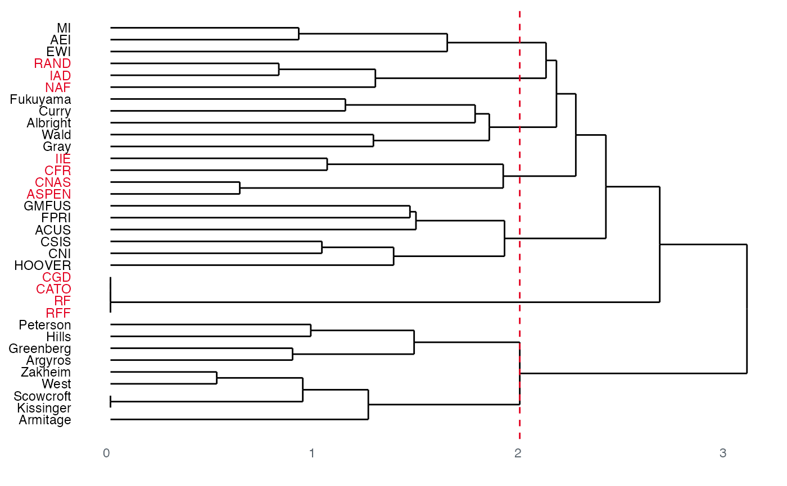
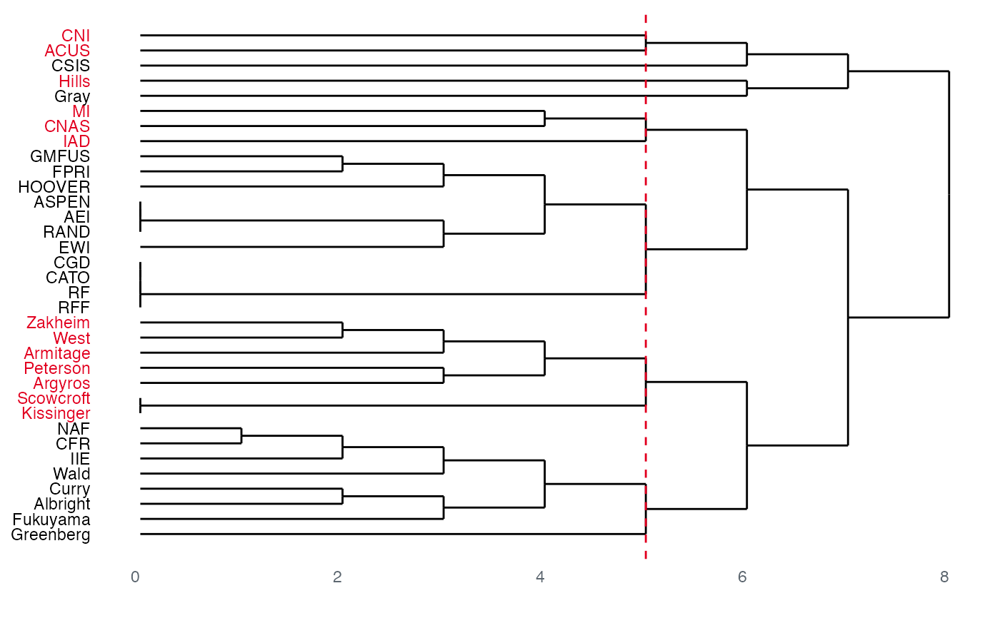
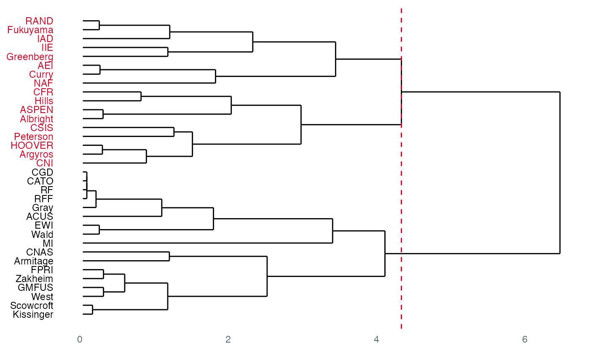

These functions combine an appropriate _census() function
together with methods for calculating the hierarchical clusters
provided by a certain distance calculation.
A plot() method exists for investigating the dendrogram
of the hierarchical cluster and showing the returned cluster
assignment.
node_equivalence(
object,
census,
k = c("silhouette", "elbow", "strict"),
cluster = c("hierarchical", "concor"),
distance = c("euclidean", "maximum", "manhattan", "canberra", "binary", "minkowski"),
range = 8L
)
node_structural_equivalence(
object,
k = c("silhouette", "elbow", "strict"),
cluster = c("hierarchical", "concor"),
distance = c("euclidean", "maximum", "manhattan", "canberra", "binary", "minkowski"),
range = 8L
)
node_regular_equivalence(
object,
k = c("silhouette", "elbow", "strict"),
cluster = c("hierarchical", "concor"),
distance = c("euclidean", "maximum", "manhattan", "canberra", "binary", "minkowski"),
range = 8L
)
node_automorphic_equivalence(
object,
k = c("silhouette", "elbow", "strict"),
cluster = c("hierarchical", "concor"),
distance = c("euclidean", "maximum", "manhattan", "canberra", "binary", "minkowski"),
range = 8L
)An object of a migraph-consistent class:
matrix (adjacency or incidence) from {base} R
edgelist, a data frame from {base} R or tibble from {tibble}
igraph, from the {igraph} package
network, from the {network} package
tbl_graph, from the {tidygraph} package
A matrix returned by a node_*_census() function.
Typically a character string indicating which method
should be used to select the number of clusters to return.
By default "silhouette", other options include "elbow" and "strict".
"strict" returns classes with members only when strictly equivalent.
"silhouette" and "elbow" select classes based on the distance between
clusters or between nodes within a cluster.
Fewer, identifiable letters, e.g. "e" for elbow, is sufficient.
Alternatively, if k is passed an integer, e.g. k = 3,
then all selection routines are skipped in favour of this number of clusters.
Character string indicating whether clusters should be
clustered hierarchically ("hierarchical") or
through convergence of correlations ("concor").
Fewer, identifiable letters, e.g. "c" for CONCOR, is sufficient.
Character string indicating which distance metric
to pass on to stats::dist.
By default "euclidean", but other options include
"maximum", "manhattan", "canberra", "binary", and "minkowski".
Fewer, identifiable letters, e.g. "e" for Euclidean, is sufficient.
Integer indicating the maximum number of (k) clusters
to evaluate.
Ignored when k = "strict" or a discrete number is given for k.
node_equivalence: Returns nodes' membership in
according to their equivalence with respective to some census/class
node_structural_equivalence: Returns nodes' membership in
structurally equivalent classes
node_regular_equivalence: Returns nodes' membership in
regularly equivalent classes
node_automorphic_equivalence: Returns nodes' membership in
automorphically equivalent classes
Thorndike, Robert L. 1953. "Who Belongs in the Family?". Psychometrika, 18(4): 267–76. doi:10.1007/BF02289263 .
Rousseeuw, Peter J. 1987. “Silhouettes: A Graphical Aid to the Interpretation and Validation of Cluster Analysis.” Journal of Computational and Applied Mathematics, 20: 53–65. doi:10.1016/0377-0427(87)90125-7 .
Other membership:
community,
components()
# \donttest{
(nse <- node_structural_equivalence(mpn_elite_usa_advice))
#> 1
#>
#> Albright, Curry, Fukuyama, Gray, Wald
#> 2
#>
#> Argyros, Armitage, Greenberg, Hills, Kissinger, Peterson, Scowcroft, West, Zakheim
#> 3
#> ACUS, CNI, CSIS, FPRI, GMFUS, HOOVER
#>
#> 4
#> AEI, EWI, MI
#>
#> 5
#> ASPEN, CFR, CNAS, IIE
#>
#> 6
#> CATO, CGD, RF, RFF
#>
#> 7
#> IAD, NAF, RAND
#>
plot(nse)

# }
# \donttest{
(nre <- node_regular_equivalence(mpn_elite_usa_advice,
cluster = "concor"))
#> 1
#>
#> Albright, Curry, Fukuyama, Wald, CFR, NAF, IIE, Greenberg
#> 2
#> Scowcroft
#> Argyros, Peterson, Armitage, West, Zakheim, Kissinger
#> 3
#> AEI, ASPEN, EWI, FPRI, GMFUS, HOOVER, CATO, CGD, RF, RAND, RFF
#>
#> 4
#> CNAS, MI, IAD
#>
#> 5
#> Gray
#>
#> 6
#> Hills
#>
#> 7
#> ACUS, CNI
#>
#> 8
#> CSIS
#>
plot(nre)

# }
# \donttest{
(nae <- node_automorphic_equivalence(mpn_elite_usa_advice,
k = "elbow"))
#> 1
#> ASPEN, CFR, CNI, CSIS, HOOVER
#> Albright, Argyros, Hills, Peterson
#> 2
#> CNAS, FPRI, GMFUS
#> Armitage, Kissinger, Scowcroft, West, Zakheim
#> 3
#> AEI, IAD, IIE, NAF, RAND
#> Curry, Fukuyama, Greenberg
#> 4
#> ACUS, CATO, CGD, EWI, MI, RF, RFF
#> Gray, Wald
plot(nae)

# }